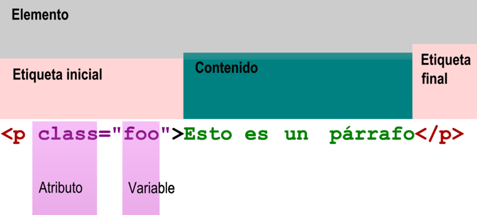

Para que sirven:
encontraremos que los atributos hacen parte de las etiquetas, que controlan, las características de
nuestros elementos HTML, ya que con ellos nos ayudan a personalizar ciertos elementos de nuestras
páginas web, tales como completar información en la etiqueta de apertura dándoles significado al
elemento HTLM que estamos colocando
Los atributos más usados
Lista de los atributos más usados en HTML
Id =” ”: Para identificar un elemento único.
class =” ”: Identificador múltiple.
align =” ”: Alineación de contenido.
border =” ”: Para darle borde al contenido.
style =” ”: Para darle un estilo al contenido.
background-color =” ”: Para color de fondo.
href =” ”: Para enlaces HTML.
height =” ”: Para determinar altura.
width =” ”: Para determinar ancho.
src=“ ”: Para imágenes.
Ejemplo

Como colocar un atributo .
Lo colocamos de la siguiente manera atributo= y todo atributo tiene unos valores.